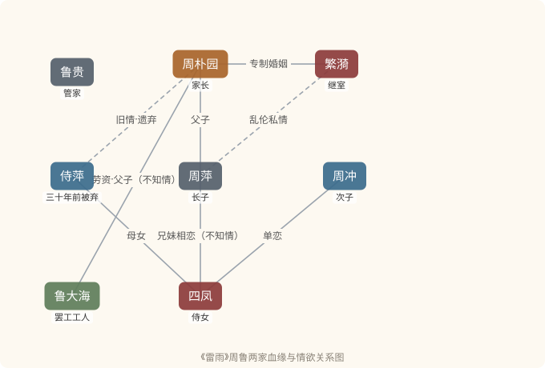

雷雨
| 作者 | 曹禺 |
|---|---|
| 成书/出版 | 1934年发表，1935年上演即成名（Britannica） Cao Yu — Encyclopaedia Britannica（百科全书） |
| 国别/地区 | 中国 |
| 时代 | 现当代 · 现代 |
| 体裁 | 话剧（四幕悲剧） |
| 语言 | 汉语（白话，诗化台词） |

《雷雨》周鲁两家血缘与情欲关系图（人物关系图）
二、创作背景
1933年，23岁的清华学生万家宝在清华园图书馆楼上写完《雷雨》；1934年发表于《文学季刊》（发表渠道为通说，待核）。1935年，留日学生剧团（中华话剧同好会）在东京首演，同年回国演出——'instantly'成名（Britannica：performed in 1935）。此后成为中国演出最多的话剧（演出数据通说待核）。
题材背景：五四后'娜拉出走'与旧家庭批判是戏剧主潮，但《雷雨》把'旧家庭'写成了命运悲剧——不是简单的控诉剧，而是纠缠着乱伦、阶级、宗教的多层悲剧。
剧本副标题'四幕悲剧'，尾声与序幕后加（1936年单行本收录；后来演出常删去——版本演变，通说待核）。
三、内容脉络
一个郁热的夏日。周公馆：矿场董事长周朴园与繁漪的婚姻冰冷如铁；侍女四凤与少爷周萍相恋；年长仆人鲁妈（侍萍）到来——她是三十年前被周朴园始乱终弃的旧人，四凤正是她的女儿。
第一重揭底：侍萍与周朴园重逢；第二重揭底：周萍与四凤是同母异父的兄妹；第三重真相：繁漪与周萍的乱伦私情、周萍是侍萍之子、鲁大海（罢工工人）是周朴园亲子——三十年恩怨在一个雷雨夜全面爆发。
结局：四凤冲入雨中触电而死，周萍开枪自尽，繁漪与侍萍疯癫——两个家庭一夜之间毁灭；周朴园独活，在'序幕'与'尾声'里成为两个疯女人守护下的老病人（尾声常被删演）。
四、主要人物表
| 人物 | 身份 | 说明 |
|---|---|---|
| 周朴园 | 矿场董事长 | 专制的家长与'始乱终弃'的旧罪人，客厅里供着侍萍的旧照 |
| 繁漪 | 周朴园之妻（继室） | '雷雨式'的女人——被囚禁的火，与继子乱伦的可怜又可怕的反抗者 |
| 周萍 | 周朴园与侍萍之子 | 在父之名与两个乱伦关系间崩溃的长子 |
| 四凤 | 侍女，侍萍之女 | 重蹈母亲命运——'不知情的乱伦'悲剧承受者 |
| 侍萍（鲁妈） | 三十年前被弃的婢女 | 命运的见证者与承受者 |
| 鲁大海 | 罢工工人代表，周朴园亲子 | 阶级冲突线索的承担者 |
| 周冲 | 周朴园与繁漪之子 | 天真的理想主义者，与四凤同死的无辜者 |
五、主题与艺术特点
- 命运与罪：希腊悲剧式的'命运'结构（乱伦、冤冤相报）加近代社会的阶级与婚姻制度——两套悲剧机器咬合运转。
- 郁热与雷雨：天气作为心理与戏剧张力（'郁热'—'爆发'），环境同构是其最著名的形式创新。
- 秩序的虚伪：周朴园客厅里的旧家具与旧照片——以'纪念'之名完成的自我赦免与对活人的专制。
- 艺术特点：锁闭式结构（一天之内三十年恩怨）、悬念的层层揭底、台词的性格化与抒情性——中国话剧从此有了成熟的'大戏'。
六、影响与评论
- Britannica：performed in 1935 'instantly' winning fame——四幕悲剧，1938/1981年分别改编电影与舞剧（Britannica：later adapted for film and dance-drama）。
Cao Yu — Encyclopaedia Britannica（百科全书） - Britannica：曹禺为'widely seen as a founder of modern Chinese spoken drama'（现代话剧奠基人），《雷雨》是其奠基之作。
Cao Yu — Encyclopaedia Britannica（百科全书） - 演出史：《雷雨》成为中国话剧演出次数最多的剧目之一（通说，具体统计待核）；1954年北京人艺版（夏淳导演）与1989年版为经典舞台版本（通说待核）。
Cao Yu — Encyclopaedia Britannica（百科全书） - 文学史定位：钱理群等《中国现代文学三十年》与夏志清评价系统均以《雷雨》为话剧艺术的成人礼（本条为学界通说，具体引证待核）。
Cao Yu — Encyclopaedia Britannica（百科全书）
七、阅读建议
难点
- 人物关系需要先画家系图（周鲁两家的血缘与婚姻网），否则悬念揭底时易混乱。
- '尾声与序幕'的宗教框子（教堂、修女）常被删演——读文本与看演出的差异要心中有数。
- 繁漪的性格（'雷雨式'女人）需从被压迫者的角度同情理解，而非简单道德判断。
- 人民文学出版社《雷雨》（《曹禺选集》/单行本）：标准文本。
- 《曹禺戏剧选》（王育生等编注）：注释与创作谈（如《雷雨》序）齐全。
- 演出录像：北京人艺版（朱琳、郑榕等）为经典舞台文本。
先画两家家系图 → 通读四幕 → 回读'序幕/尾声'比较删演得失 → 对照《日出》与《北京人》看曹禺风格的演进。
八、待核实
- 《文学季刊》1934年7月号发表（巴金发现说）的细节待核。
- 东京首演（1935年4月中华话剧同好会）与国内首演（天津孤松剧团？）的具体日期待核。
- 尾声序幕被删演的历史（1936年后演出惯例）待核。
- 1954/1989年北京人艺版演职员与演出数据待核。
本页主要来源
曹禺的其他收录作品：雷雨